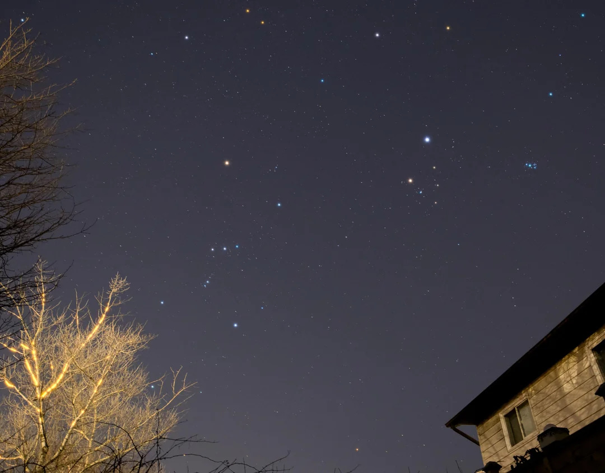
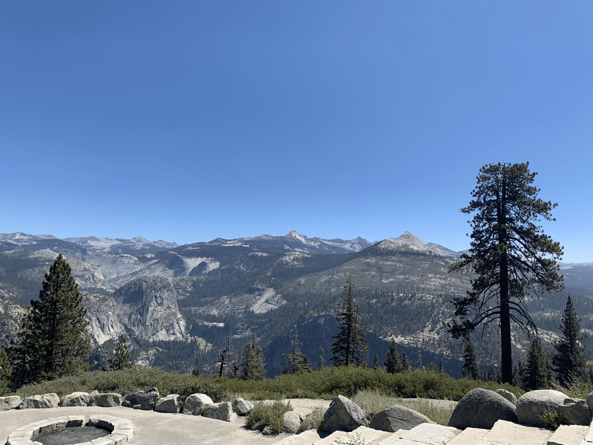
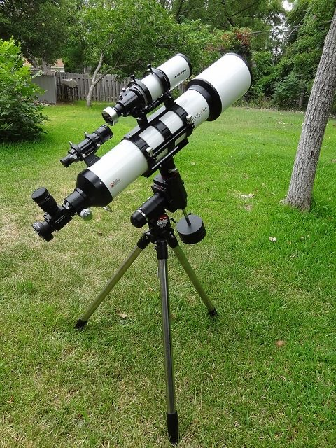

Guide to Gazing is a website focused on making stargazing easier to understand. The goal is to break things down into simple sections so it is easier to learn what you are looking at in the night sky. The site will include pages about different celestial objects, helpful tools, and places to observe. It is designed to feel organized and clear so that beginners can follow along without feeling overwhelmed.
Learn about stars, planets, and other objects you can see.

Discover good places to go for stargazing.

Read about tools that help you observe the sky.